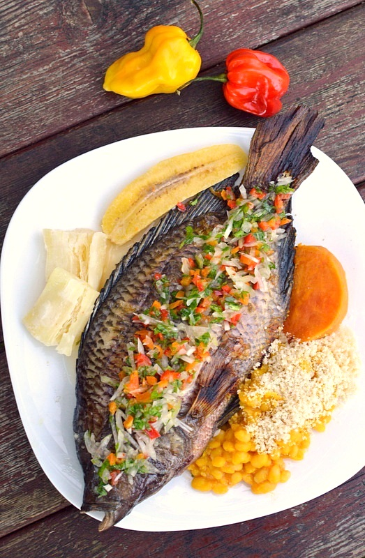

Olá, sejam todos bem vindos ao universo Africano. Falar de cozinha Africana é falar também de cozinha Angolana. A gastronomia angolana é muito rica e diversificada. Atualmente, a cozinha angolana é famosa por combinar e misturar sabores e métodos da cozinha, portuguesa e africana
A simplicidade é a principal característica da culinária angola. O bom tempero da cozinha Angolana pode ser exprimentado numa variação que vai de apetitosos pastéis e salgadinhos à saborosos pratos de peixes, mariscos e carnes. O prato típico de Angola é o funge, uma espécie de polenta cremosa feita com farinha de mandioca ou de milho. O acompanhamento pode ter: a QUIZACA (folhas do pé de mandioca, cozidas e temperadas); o PEIXE FRESCO COZIDO (ensopado); o PEIXE SECO COZIDO ou ASSADO; a Galinha de Cabidela (ao molho pardo); a Muamba (prato à base de galinha, jinguba (amendoim) quiabos e outros temperos); ou o FEIJÃO preparado no óleo de palma (tipo de azeite de dendê)
